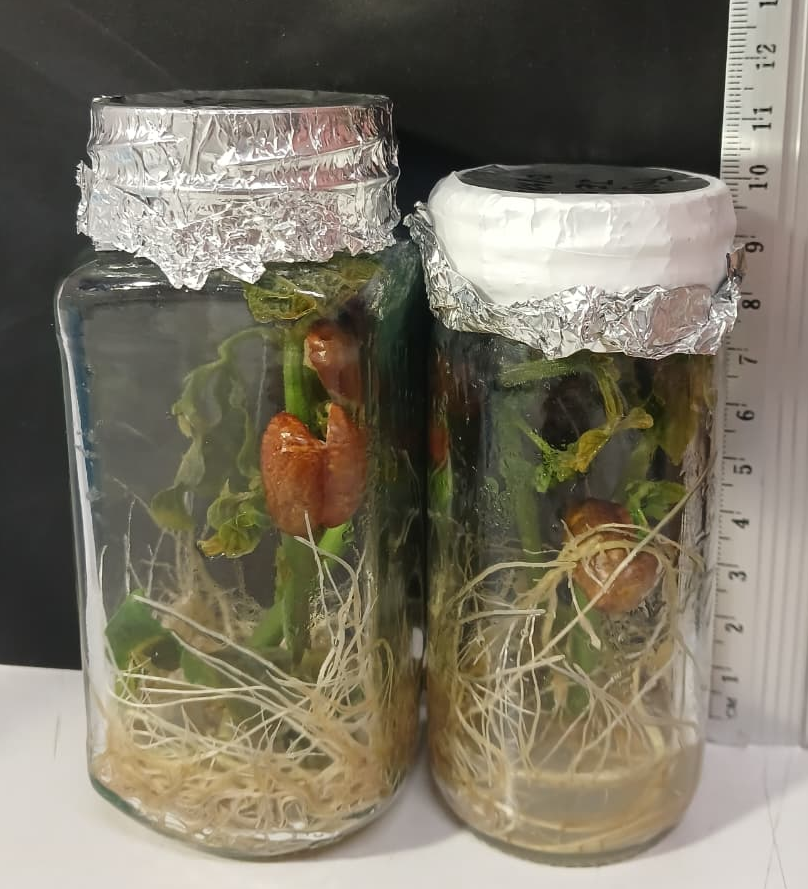

#install.packages("readxl")
#install.packages("car")
#install.packages("agricolae")
#install.packages("lmtest")
#install.packages("ggplot2")
#install.packages("gtable")Capítulo 5.Diseño de Bloques Completamente al Azar (DBCA)

El mapa conceptual presenta los principales componentes de los diseños en bloques, una estrategia experimental usada para controlar la variabilidad mediante la formación de grupos homogéneos llamados bloques. Entre estos diseños se encuentra el Diseño en Bloques Completos al Azar (DBCA), el cual incorpora el efecto de bloque y requiere definir claramente las hipótesis, el modelo estadístico, así como la selección y aleatorización de las unidades experimentales. Su análisis se realiza a través del ANOVA, que permite evaluar si los tratamientos difieren más allá de la variación entre bloques.
Otros diseños relacionados incluyen el diseño en bloques incompletos balanceados y los diseños en cuadro latino y grecolatino, los cuales permiten controlar simultáneamente múltiples fuentes de variación. Cada uno de estos diseños exige un procedimiento estructurado que abarca la formulación del modelo, el análisis de varianza correspondiente y la interpretación de los resultados.
Modelo teórico para el Diseño de Bloques Completamente al Azar (DBCA)
El Diseño en Bloques Completos al Azar (DBCA) se utiliza cuando existe una fuente de variación conocida —denominada bloques— que puede influir en la variable de respuesta. Para controlar esa variabilidad, las unidades experimentales se agrupan en bloques homogéneos, y dentro de cada bloque los tratamientos se asignan aleatoriamente.
El modelo lineal aditivo correspondiente al DBCA se expresa como:
\[ Y_{ij} = \mu + \tau_i + \beta_j + \varepsilon_{ij} \]
donde:
- \(Y_{ij}\): valor observado del tratamiento \(i\) en el bloque \(j\)
- \(\mu\): media general
- \(\displaystyle \tau_i\): efecto del tratamiento \(i\)
- \(\displaystyle \beta_j\): efecto del bloque \(j\)
- \(\displaystyle \varepsilon_{ij}\): error aleatorio asociado, con \(\displaystyle \varepsilon_{ij} \sim N(0,\sigma^2)\)
Para ello se formulan las siguientes hipótesis estadísticas:
\[ H_0 : \mu_1 = \mu_2 = \cdots = \mu_k \]
\[ H_A : \mu_i \ne \mu_j \quad \text{para algún } i \ne j \]
Estas hipótesis permiten evaluar si existen diferencias significativas entre los tratamientos más allá de la variabilidad explicada por los bloques.
Análisis de varianza
De acuerdo con (Gutiérrez Pulido & Vara Salazar, 2012), las hipótesis planteadas en las ecuaciones anteriores se evalúan mediante un análisis de varianza de dos vías, debido a que en el DBCA es necesario considerar simultáneamente dos fuentes de variación: los tratamientos y los bloques. La Tabla presenta el formato general del ANOVA correspondiente a un diseño en bloques completos al azar.
Tabla ANOVA para un diseño en bloques completos al azar
| Fuente de variabilidad | Suma de cuadrados | Grados de libertad | Cuadrado medio | Estadístico F | Valor-p |
|---|---|---|---|---|---|
| Tratamientos | SCTRAT | \(k - 1\) | CMTRAT | \(F_0 = \frac{CM_{TRAT}}{CM_E}\) | \(P(F > F_0)\) |
| Bloques | SCB | \(b - 1\) | CMB | \(F_0 = \frac{CM_{B}}{CM_E}\) | \(P(F > F_0)\) |
| Error | SCE | \((k - 1)(b - 1)\) | CME | — | — |
| Total | SCT | \(kb - 1\) | — | — | — |
Nota: SC: Suma de cuadrados, CM: Cuadrado medio.
Problema
Nota
El crecimiento de las plantas de frijol (Phaseolus vulgaris) depende en gran medida de la interacción entre sus raíces y los microorganismos del suelo, especialmente los rizobios, los cuales establecen una relación simbiótica formando nódulos radiculares que facilitan la fijación biológica de nitrógeno (FBN). Este proceso aporta una fuente natural y sostenible de nitrógeno, fundamental para el desarrollo y rendimiento de las plantas.
Sin embargo, el aprovechamiento de esta simbiosis puede verse afectado por factores edáficos y ambientales como la composición del suelo, la disponibilidad de humedad, la temperatura y la luz, que influyen directamente en la actividad microbiana y en la eficiencia de la FBN.
Por ello, resulta necesario evaluar la respuesta del frijol frente a diferentes tratamientos de fertilización, combinando fuentes químicas y biológicas (bioinoculantes y abonos orgánicos), con el fin de identificar estrategias que promuevan un crecimiento óptimo y un manejo más sostenible del cultivo.

Imagen suminitrada por el profesor Christian Chacín. Laboratorio de Cultivos Vegetales UDES (2025).
Estructura de la base de datos
El presente experimento se estructuró bajo un Diseño de Bloques Completamente al Azar (DBCA) con el objetivo de evaluar el efecto de diferentes tratamientos de fertilización sobre el crecimiento de las plantas de frijol (Phaseolus vulgaris). Este diseño permite controlar la variabilidad asociada a factores ambientales no experimentales mediante la conformación de bloques homogéneos.
En este caso, se consideraron tres bloques (A, B y C) que representan unidades experimentales con condiciones similares dentro de cada uno, y se aplicaron cuatro tratamientos de fertilización: NPK Comercial, NPK + Bioinoculante, Orgánico + NPK (50:50) y Orgánico + NPK.
El parámetro evaluado, denominado Resultado, corresponde a una variable cuantitativa continua (por ejemplo, biomasa, concentración de metal o altura), expresada en valores decimales.
Descripción de las variables del experimento
El diseño experimental corresponde a un Diseño de Bloques Completamente al Azar (DBCA), en el cual se evaluaron diferentes tratamientos de fertilización en plantas de frijol (Phaseolus vulgaris).
Los bloques representan unidades experimentales homogéneas, y la variable de respuesta cuantifica el efecto del tratamiento sobre el crecimiento o bioacumulación.
| Tipo de variable | Descripción | |
|---|---|---|
| Tratamiento | Cualitativa nominal | Incluye los diferentes niveles de fertilización, como NPK Comercial, NPK + Bioinoculante, Orgánico + NPK (50:50), entre otros. |
| Bloque | Cualitativa nominal | Factor de bloqueo que agrupa las unidades experimentales bajo condiciones similares. Se identifican con letras (A, B, C, …). |
| Resultado | Cuantitativa continua | Variable de respuesta que representa la medición obtenida (por ejemplo: altura, biomasa, concentración de metal, etc.), expresada con valores decimales. |
Instalar Paquetes (solo una vez)
Cargar las librerias necesarias para el análisis
suppressPackageStartupMessages({
library(readxl)
library(car)
library(agricolae)
library(lmtest)
library(ggplot2)
})Importar datos desde Excel
library(readxl)
DBCA <- read_excel("C:/R-Proyectos/r-para-mi/data/DBCA_Frijol/DBCA_frijol.xlsx")Exploración inicial y estructura de la base de datos
View(DBCA)names(DBCA)[1] "Tratamiento" "Bloque" "Resultado" str(DBCA)tibble [120 × 3] (S3: tbl_df/tbl/data.frame)
$ Tratamiento: chr [1:120] "NPK Comercial" "NPK Comercial" "NPK Comercial" "NPK Comercial" ...
$ Bloque : chr [1:120] "A" "A" "A" "A" ...
$ Resultado : num [1:120] 51.5 49.6 51.9 54.6 49.3 ...summary(DBCA$Resultado) Min. 1st Qu. Median Mean 3rd Qu. Max.
44.71 52.30 56.76 57.26 61.24 72.39 Convertir variables a factores
Para garantizar un análisis correcto bajo el Diseño de Bloques Completamente al Azar (DBCA), las variables Tratamiento y Bloque se convierten a factores en R. Esta conversión permite que el modelo ANOVA reconozca dichos elementos como variables categóricas y no como valores numéricos, asegurando una interpretación adecuada de los efectos experimentales.
DBCA$Tratamiento <- as.factor(DBCA$Tratamiento)
DBCA$Bloque <- as.factor(DBCA$Bloque)
str (DBCA)tibble [120 × 3] (S3: tbl_df/tbl/data.frame)
$ Tratamiento: Factor w/ 4 levels "NPK + Bioinoculante",..: 2 2 2 2 2 2 2 2 2 2 ...
$ Bloque : Factor w/ 3 levels "A","B","C": 1 1 1 1 1 1 1 1 1 1 ...
$ Resultado : num [1:120] 51.5 49.6 51.9 54.6 49.3 ...ANOVA para Diseño de Bloques Completamente al Azar -DBCA-
modeloDBCA <- aov(Resultado ~ Tratamiento + Bloque, data = DBCA)
summary(modeloDBCA) Df Sum Sq Mean Sq F value Pr(>F)
Tratamiento 3 3602 1200.6 153.749 <2e-16 ***
Bloque 2 11 5.4 0.688 0.505
Residuals 114 890 7.8
---
Signif. codes: 0 '***' 0.001 '**' 0.01 '*' 0.05 '.' 0.1 ' ' 1Interpretación: Los resultados del Análisis de Varianza (ANOVA) se ajustan a un modelo de Diseño de Bloques Completamente al Azar (DBCA), donde se evaluó el efecto del factor Tratamiento sobre una variable de Resultado, controlando la variabilidad mediante el factor Bloque.
1. Efecto del Tratamiento. El análisis indica que el factor Tratamiento es altamente significativo sobre la variable de Resultado. Dado que el valor \(\text{p}\) es extremadamente pequeño (denotado por ‘***’), se rechaza la hipótesis nula de que no hay diferencias entre las medias de los tratamientos. Esto significa que existe una diferencia estadísticamente significativa en el Resultado al menos entre dos de los niveles de Tratamiento. Grados de Libertad (Df): 3. Valor F (F value): 153.749. Valor p (\(\text{Pr}(>F)\)): \(<2 \text{e}-16\) (Menor que \(0.001\))
2. Efecto del Bloque. El análisis de la fuente de variación Bloque evalúa si el agrupamiento de las unidades experimentales fue efectivo para reducir la variabilidad del error. El valor \(\text{p}\) (0.505) es mayor que el nivel de significancia comúnmente utilizado (\(\alpha = 0.05\)). Por lo tanto, el factor Bloque no resultó ser significativo. Esto indica que la variabilidad atribuida a las diferencias entre los Bloques no es mayor que la variabilidad aleatoria, sugiriendo que la inclusión del bloqueo no fue esencial o efectivo en este experimento particular.Grados de Libertad (Df): 2. Valor F (F value): 0.688. Valor p (\(\text{Pr}(>F)\)): 0.505
3. Resumen del Modelo. El factor Tratamiento ejerce una influencia significativa en el Resultado. Sin embargo, el factor Bloque no contribuye significativamente a explicar la variación del Resultado. Se requiere un análisis post-hoc (como Tukey o Sidak) para determinar cuáles pares específicos de Tratamientos difieren entre sí.
Verificación de supuestos
El ANOVA requiere cumplir tres supuestos básicos para garantizar la validez de los resultados. Ignorar estos supuestos puede generar conclusiones erróneas:
Normalidad, que implica que los datos se aproximen a una distribución normal, evaluada comúnmente con la prueba de Shapiro–Wilk.
Homogeneidad de varianzas (homocedasticidad), que supone una variabilidad similar entre los grupos.
Independencia de las observaciones, donde los datos de un grupo no deben influir en los de otro.
Normalidad de residuos (Shapiro-Wilk)
res <- residuals(modeloDBCA)shapiro.test(res)
Shapiro-Wilk normality test
data: res
W = 0.99559, p-value = 0.9725Interpretación: La hipótesis nula de Shapiro–Wilk es que los datos provienen de una distribución normal , al tiempo que el p-value = 0.9725 es ≥ que 0.05, no hay evidencia para rechazar la normalidad, es por ello por lo que los residuos pueden considerarse normalmente distribuidos, lo cual respalda el supuesto de normalidad necesario para ANOVA.
Gráfico Q-Q de los residuos estandarizados
qqnorm(res)
qqline(res, col = "red")
hist(res, main = "Histograma de residuos", xlab = "Residuos")
Homocedasticidad
bartlett.test(Resultado ~ Tratamiento, data = DBCA)
Bartlett test of homogeneity of variances
data: Resultado by Tratamiento
Bartlett's K-squared = 7.4355, df = 3, p-value = 0.05924car::leveneTest(Resultado ~ Tratamiento, data = DBCA)Levene's Test for Homogeneity of Variance (center = median)
Df F value Pr(>F)
group 3 1.3691 0.2557
116 fligner.test(Resultado ~ Tratamiento, data = DBCA)
Fligner-Killeen test of homogeneity of variances
data: Resultado by Tratamiento
Fligner-Killeen:med chi-squared = 3.3125, df = 3, p-value = 0.3459Interpretación: La hipótesis nula de Bartlett es que las varianzas entre los grupos son iguales, y como el p-valor =0.059 es ≥ 0.05, no se rechaza la hipótesis nula; no se rechaza la homogeneidad de varianzas, aunque está cerca del umbral. Esto sugiere que los datos cumplen razonablemente el supuesto de homocedasticidad, pero con un margen ajustado.
Gráfico de Residuos vs. Valores Ajustados
# 1. Extraer valores ajustados y residuos del modelo DBCA
datos_homocedasticidad <- data.frame(
Valores_Ajustados = fitted(modeloDBCA), # valores predichos del modelo
Residuos_Std = rstandard(modeloDBCA) # residuos estandarizados
)
# 2. Gráfico de residuos vs valores ajustados
ggplot(datos_homocedasticidad, aes(x = Valores_Ajustados, y = Residuos_Std)) +
geom_point(alpha = 0.6) +
geom_hline(yintercept = 0, linetype = "dashed", color = "red") +
theme_minimal() +
labs(
title = "Gráfico de Residuos vs. Valores Ajustados (Homogeneidad de Varianzas)",
x = "Valores ajustados (predichos)",
y = "Residuos estandarizados"
)
# Interpretación:
# Los puntos deben dispersarse aleatoriamente alrededor de y = 0
# sin formar patrones o conos, indicando homogeneidad de varianzas.Interpretación: Tanto las pruebas estadísticas (Bartlett, Levene y Fligner-Killeen) como el gráfico de residuos indican que se cumple el supuesto de homogeneidad de varianzas en el modelo DBCA. Por tanto, el análisis de varianza (ANOVA) puede aplicarse de forma válida, ya que la variabilidad dentro de los grupos de tratamiento es similar y no se detectan violaciones importantes de este supuesto.
Independencia de residuos
El Durbin–Watson test evalúa la independencia de los residuos:
Hipótesis nula (H₀): los residuos son independientes.
Hipótesis alternativa (H₁): los residuos están autocorrelacionados.
Si el p-value > 0.05, no se rechaza H₀, por lo que los residuos son independientes (el supuesto se cumple). Si el p-value < 0.05, existe autocorrelación y el supuesto no se cumple.
dwtest(modeloDBCA)
Durbin-Watson test
data: modeloDBCA
DW = 2.042, p-value = 0.4159
alternative hypothesis: true autocorrelation is greater than 0Interpretación: Debido a que el valor \(\text{p}\) (\(0.4159\)) es mucho mayor que \(0.05\), no hay evidencia estadística suficiente para rechazar la hipótesis nula. Se concluye, por lo tanto, que el supuesto de independencia de los residuos se cumple satisfactoriamente en el modelo DBCA. La cercanía del estadístico DW (2.042) al valor ideal de 2.0 refuerza esta conclusión.
Pruebas aposteriori
En el marco del Diseño de Bloques Completamente al Azar (DBCA) aplicado al cultivo de frijol, una vez verificados los supuestos de normalidad y homogeneidad de varianzas, se procede a realizar las pruebas de comparación múltiple de medias. Estas pruebas, como las de Tukey o Duncan, permiten identificar qué tratamientos presentan diferencias significativas en su efecto sobre la altura de las plantas.
El uso del DBCA contribuye a reducir la variabilidad experimental al controlar los factores externos mediante el bloqueo, lo que incrementa la precisión y confiabilidad de las comparaciones. En consecuencia, las diferencias observadas entre tratamientos reflejan principalmente los efectos reales de las condiciones aplicadas, y no la influencia del azar o de fuentes de variación no controladas.
Tukey HSD (agrupamiento con letras)
HSD.test(modeloDBCA, "Tratamiento", group = TRUE, console = TRUE)
Study: modeloDBCA ~ "Tratamiento"
HSD Test for Resultado
Mean Square Error: 7.808829
Tratamiento, means
Resultado std r se Min Max Q25
NPK + Bioinoculante 54.25933 2.395591 30 0.5101904 49.26 58.09 52.9100
NPK Comercial 50.29667 2.453096 30 0.5101904 44.71 54.74 48.5975
Orgánico + NPK 64.78000 3.621806 30 0.5101904 57.14 72.39 62.1700
Organico + NPK (50:50) 59.71300 2.488591 30 0.5101904 55.73 65.66 58.2425
Q50 Q75
NPK + Bioinoculante 54.045 55.9275
NPK Comercial 50.080 51.8625
Orgánico + NPK 65.070 66.9650
Organico + NPK (50:50) 59.480 61.0025
Alpha: 0.05 ; DF Error: 114
Critical Value of Studentized Range: 3.687325
Minimun Significant Difference: 1.881238
Treatments with the same letter are not significantly different.
Resultado groups
Orgánico + NPK 64.78000 a
Organico + NPK (50:50) 59.71300 b
NPK + Bioinoculante 54.25933 c
NPK Comercial 50.29667 dInterpretación: La prueba de Tukey HSD, aplicada al Diseño de Bloques Completamente al Azar (DBCA) para la variable altura de las plantas de frijol, indica que el Tratamiento 4 obtuvo la mayor media (64.78 cm; grupo a), seguido del Tratamiento 3 (59.71 cm; grupo b), luego el Tratamiento 2 (54.26 cm; grupo c), y finalmente el Tratamiento 1 (50.29 cm; grupo d), con la menor media. El valor de la diferencia mínima significativa (HSD) fue de 1.88, más estricto que el obtenido con la prueba LSD (1.43). Aun así, los tratamientos mantienen una separación completa, sin letras compartidas entre grupos, lo que evidencia que todas las medias difieren significativamente entre sí al nivel de confianza del 95 %.
Estos resultados confirman que los tratamientos ejercieron efectos claramente diferenciados sobre la altura de las plantas, y que las diferencias observadas no se deben al azar. La consistencia entre las pruebas de LSD y Tukey respalda la robustez y confiabilidad del experimento.
Comparaciones múltiples con LSD
out_LSD <- LSD.test(modeloDBCA, "Tratamiento", group = TRUE, console = TRUE)
Study: modeloDBCA ~ "Tratamiento"
LSD t Test for Resultado
Mean Square Error: 7.808829
Tratamiento, means and individual ( 95 %) CI
Resultado std r se LCL UCL Min
NPK + Bioinoculante 54.25933 2.395591 30 0.5101904 53.24865 55.27002 49.26
NPK Comercial 50.29667 2.453096 30 0.5101904 49.28598 51.30735 44.71
Orgánico + NPK 64.78000 3.621806 30 0.5101904 63.76932 65.79068 57.14
Organico + NPK (50:50) 59.71300 2.488591 30 0.5101904 58.70232 60.72368 55.73
Max Q25 Q50 Q75
NPK + Bioinoculante 58.09 52.9100 54.045 55.9275
NPK Comercial 54.74 48.5975 50.080 51.8625
Orgánico + NPK 72.39 62.1700 65.070 66.9650
Organico + NPK (50:50) 65.66 58.2425 59.480 61.0025
Alpha: 0.05 ; DF Error: 114
Critical Value of t: 1.980992
least Significant Difference: 1.429322
Treatments with the same letter are not significantly different.
Resultado groups
Orgánico + NPK 64.78000 a
Organico + NPK (50:50) 59.71300 b
NPK + Bioinoculante 54.25933 c
NPK Comercial 50.29667 dInterpretación: El resultado de la prueba LSD (Least Significant Difference) aplicada al Diseño de Bloques Completamente al Azar (DBCA) para la variable altura de las plantas de frijol evidencia una clara separación de medias entre tratamientos. El Tratamiento 4 presentó la mayor altura promedio (64.78 cm; grupo a), seguido del Tratamiento 3 (59.71 cm; grupo b), el Tratamiento 2 (54.26 cm; grupo c) y finalmente el Tratamiento 1 (50.29 cm; grupo d), con la menor media. El valor de la diferencia mínima significativa (LSD) fue de 1.43, indicando que cualquier diferencia superior a este umbral es estadísticamente significativa al 95 % de confianza. Ninguno de los tratamientos comparte letra, lo que confirma que todos difieren significativamente entre sí. Estos resultados respaldan que los tratamientos generaron efectos distintos y consistentes sobre la altura de las plantas de frijol, más allá de la variabilidad natural controlada mediante los bloques.
Visualización de resultados
Caja y Bigote (Boxplot en ggplot2)
ggplot(DBCA, aes(x = Tratamiento, y = Resultado, fill = Tratamiento)) + geom_boxplot() + theme_minimal() + labs( title = "Distribución del resultado por tratamiento", x = "Tratamiento", y = "Resultado")
Interpretación: La gráfica muestra la distribución de los valores de altura de las plantas de Phaseolus vulgaris bajo cuatro tratamientos de fertilización evaluados mediante un Diseño de Bloques Completamente al Azar (DBCA). Se observa una tendencia ascendente en la mediana y en el rango de los resultados desde NPK Comercial hasta Orgánico + NPK, lo que indica un efecto progresivamente favorable de los tratamientos sobre el crecimiento de las plantas.
El tratamiento Orgánico + NPK presenta las mayores alturas promedio, seguido de Orgánico + NPK (50:50), NPK + Bioinoculante y finalmente NPK Comercial, que registra los valores más bajos. La variabilidad dentro de cada grupo se mantiene controlada, aunque se identifica un valor atípico en el tratamiento Orgánico + NPK (50:50), algo común en ensayos biológicos debido a la variación natural entre individuos.
Estos resultados coinciden con las pruebas de comparación de medias (LSD y Tukey), en las que los tratamientos se agrupan en cuatro categorías estadísticas distintas (a, b, c y d), confirmando que las diferencias en altura entre los tratamientos son estadísticamente significativas y reflejan efectos reales de las condiciones de fertilización aplicadas.